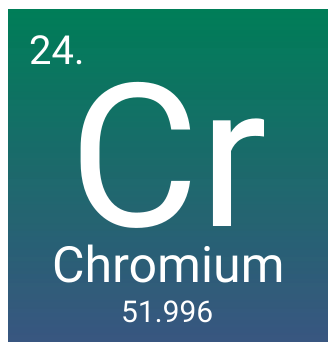

About
Chromium is a chemical element with the symbol Cr and atomic number 24. It is the first element in group 6. It is a steely-grey, lustrous, hard, and brittle transition metal. Chromium is the main additive in stainless steel, to which it adds anti-corrosive properties.Wikipedia

Image

Image link-https://upload.wikimedia.org/wikipedia/commons/0/08/Chromium_crystals_and_1cm3_cube.jpg
Symbol- Cr
Atomic mass- 51.9961 u
Atomic number- 24
Discovered- 1794
Discovered by- Louis Nicolas Vauquelin
Electrons per shell- 2, 8, 13, 1
Oxidation states- −4, −2, −1, 0, +1, +2, +3, +4, +5, +6 (depending on the oxidation state, an acidic, basic, or amphoteric oxide)
Group- group 6
Appearance - silvery metallic
Van der Waals radius - NA